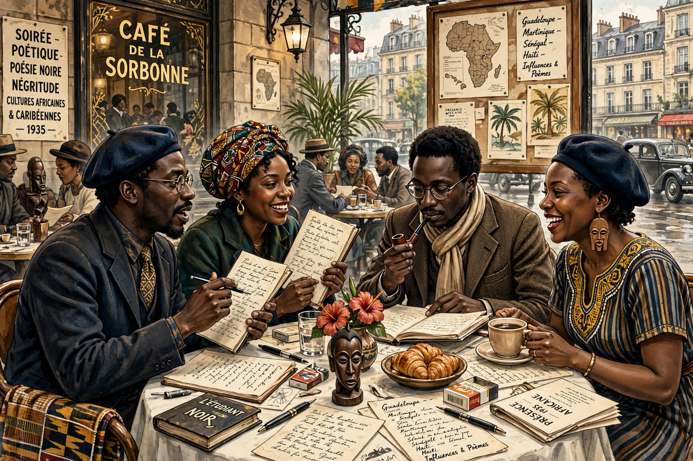

Négritude (from French 'nègre' and '-itude') is a framework of critique and literary theory developed mainly by francophone intellectuals, writers and politicians of the African diaspora during the 1930s, aimed at raising and cultivating 'black consciousness' and affirming African cultural values against French colonial assimilation.

| Founders | Aimé Césaire, Léopold Sédar Senghor, Léon-Gontran Damas |
|---|---|
| Period | 1930s onwards |
| Key works | Césaire, Notebook of a Return to the Native Land (1939) |
The term was coined by Aimé Césaire of Martinique in his 1939 poem Cahier d'un retour au pays natal. With Senghor (later first president of Senegal) and Damas of French Guiana, students together in Paris, he had founded the journal L'Étudiant noir (1935). Influences included the Harlem Renaissance, Haitian indigenism, surrealism and Marxism.
Négritude celebrated pre-colonial African culture, emotion, rhythm and communal values as a counter to European rationalism and colonial denigration — summarised in Senghor's dictum that 'emotion is Negro as reason is Greek'. Critics, including Wole Soyinka (who quipped that a tiger does not proclaim its tigritude), Frantz Fanon and later writers, charged it with essentialism and romanticising the past. It nonetheless influenced anti-colonial movements and later Black consciousness thought worldwide.